Hot Chips 2026上，三星带来《Evolving HBM Base Die》演讲，讲述如何把高带宽内存的基片（base die/B-die）从被动中介层变成强大得多的角色。ServeTheHome现场报道全文。
核心轨迹：用先进逻辑工艺武装基片，Phase 1回收XPU面积（PHY缩小、内存控制器下移）、Phase 2扩展功能（RAS/传感器、外接内存、处理单元卸载）、Phase 3迈向真正的3D垂直集成（zHBM，移除2.5D中介层）。
HBM把工作分给堆叠在上方的DRAM核心die和下方的base die。三星把堆叠的存储层叫C-die，base die（或B-die）承载PHY和穿透硅通孔（TSV），形成到计算die的通信通道。4、8、12或16个C-die堆叠落在base die上。
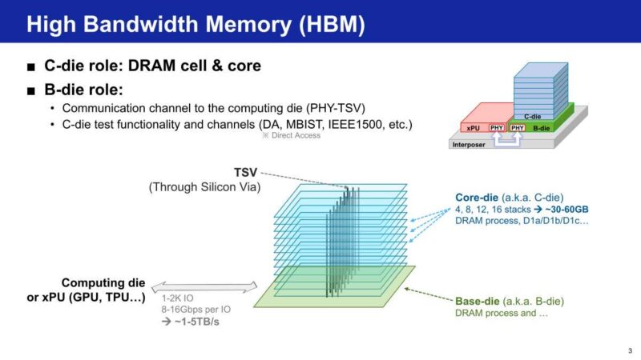
HBM带宽和容量自第一代起稳步攀升。三星历史数据：从最初HBM的约1GB容量、1TB/s带宽，到HBM5世代突破60GB和6TB/s。持续上升的带宽（而非纯容量）不断迫使base die发生根本变化。
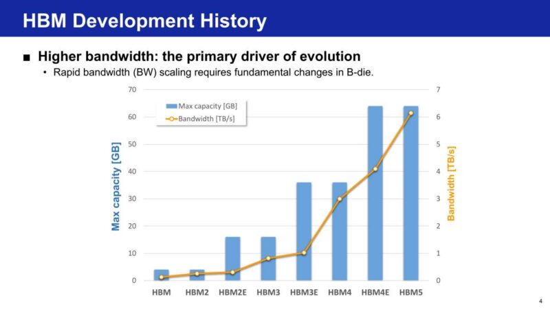
几个限制制约HBM带宽增长。三星指出C-die堆叠和base die上的穿透硅通孔数量和间距，以及B-die内嵌PHY的I/O数量和速度。TSV和DQ数对比间距和面积跨世代变化，显示压力在哪里累积。
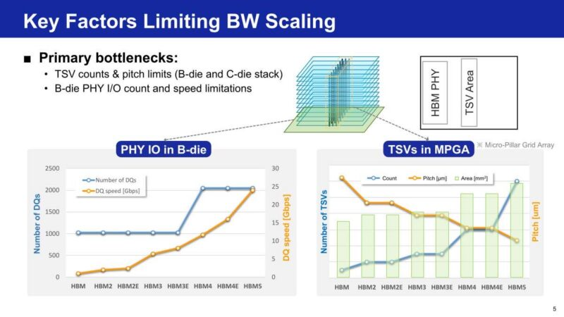
C-die的工艺技术留在DRAM类节点，但base die开始迁移。三星趋势表显示B-die从较旧的逻辑工艺转向、HBM4起用4nm，缩小与XPU SoC的差距。即便能效提升，MPGA功耗仍在升，这正是三星说从HBM4起B-die里先进逻辑变得必需的原因。
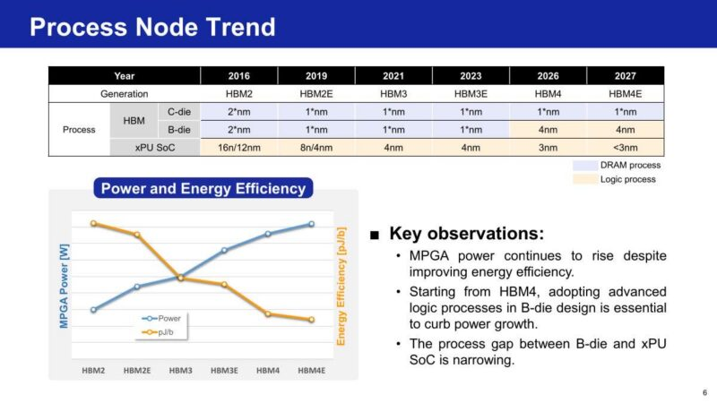
三星把D1c DRAM工艺和逻辑4nm用到HBM4，主要目标是降功耗。active area最小化也重要，这项工作标志着真正的DRAM与先进逻辑集成之始。跨工艺节点轨迹显示，逻辑节点推进时TSV到PHY的中继器功耗和延迟都在下降。
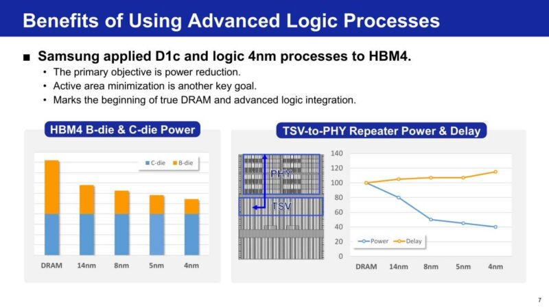
标准HBM（sHBM，三星称）把B-die限制在基本的数据和测试路径功能。定制HBM（cHBM）则用先进逻辑工艺构建更SoC化的base die，同时仍共享标准C-die堆叠。此前业界连非内存厂商（如Marvell）都展示过定制HBM。
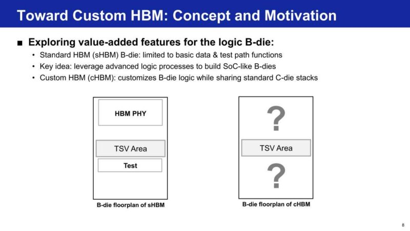
传统缩放正撞物理极限。节点缩小放缓、单片die接近光罩极限、多chiplet中介层碰尺寸极限。三星的答案是用已经在跑先进逻辑的base die，把一些功能从XPU卸载到B-die。
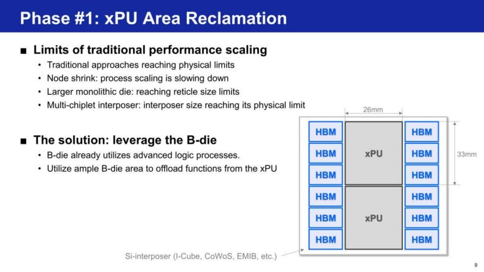
当代标准HBM上，PHY是base die上最大的块。三星用建在先进逻辑上的die-to-die接口替换传统HBM PHY，缩小占用footprint、也缩短通道提升能效。腾出的硅变成XPU面积扩展的空间：floorplan对比可见。
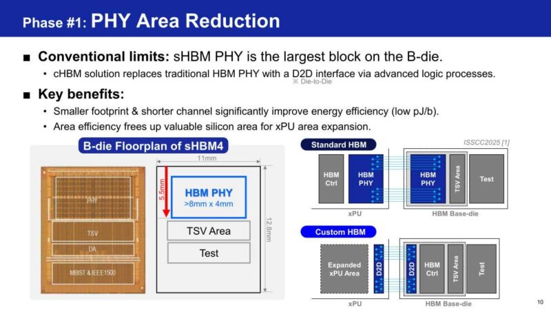
从HBM2到sHBM4，PHY footprint和通道深度持续扩张以喂更高带宽。先进逻辑显著削减HBM4到HBM5的PHY和D2D面积，把更多功率包进更小的PHY区域。更短通道降低每bit能，但把更多功率塞进更小PHY提高功率密度、制造热热点。
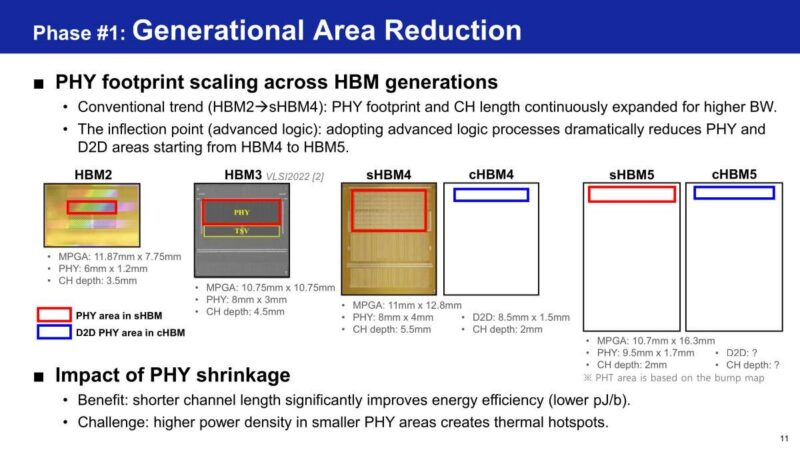
热压力有专门解决。三星提出Heat Path Block（HPB），基于cHBM4设计经验构建。PHY覆盖率超过50% 时，峰值温度降超35%：sHBM4E到sHBM5 I/O速度翻倍、功率密度从0.5升到超2.0 W/mm²，三星正需要这个。
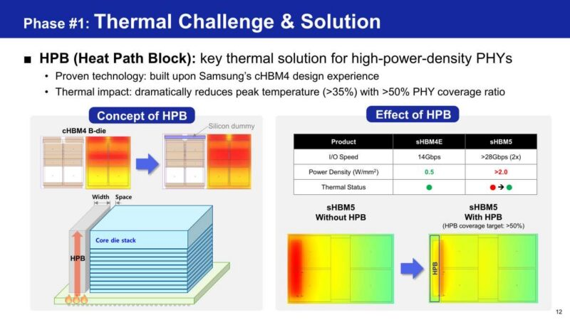
base die一旦有空间，三星开始把XPU逻辑搬上去。首要目标就是内存控制器。把MC移到B-die回收宝贵的XPU硅，三星称热影响可控，传统HBM内存控制器已积极移植进cHBM。
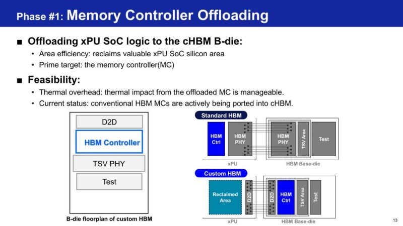
把SRAM放base die也提升可靠性。三星基于SRAM的cell修复方案用未用的B-die空间、以细粒度解码并重定向失败cell地址、跨通道共享修复容量。相比依赖C-die有限备用资源的传统修复，此方案在B-die提供更大更灵活的修复资源。
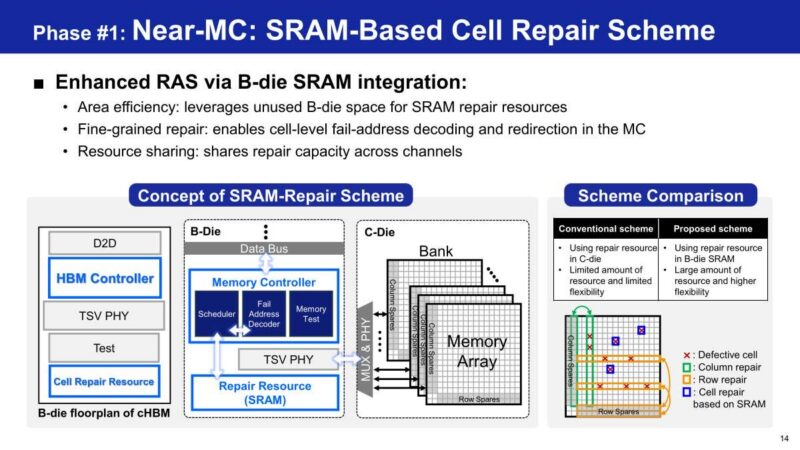
Phase 1在桌上留了大量硅。因为整体HBM footprint主要由C-die堆叠界定、sHBM的base die大多是被动布线，即使内存控制器移走后三星仍看到空间。那片未利用的B-die区域成为Phase 2扩展功能集的基础。
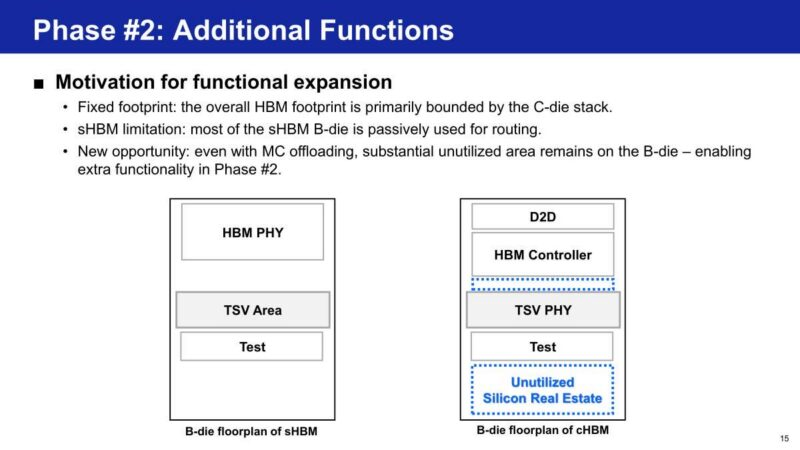
定制HBM把SoC级RAS带进base die：标准HBM所缺乏的。三星集成热、电压、工艺、老化传感器做实时遥测，加上片上自测方案（on-die ATE和pattern generators）提高测试覆盖和良率。这种传感器+自测部署正是区分cHBM与sHBM的所在。
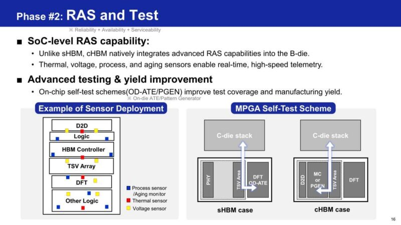
容量需求增长得和带宽一样快。三星指出上下文窗口每年扩张约30倍，驱动大量KV cache内存需求，并称长期记忆存储/检索是下一代AI模型的关键瓶颈。这指向下一代AI SoC需要更高容量、而不只是更高带宽。
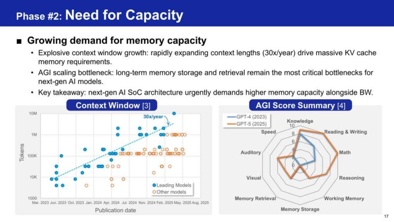
加容量的一条路径是从base die直接挂外部内存。三星用B-die的外侧岸线（outer shoreline）通过die上集成的专用PHY和控制器连接外部内存：比传统PCIe扩展更高带宽更低延迟。
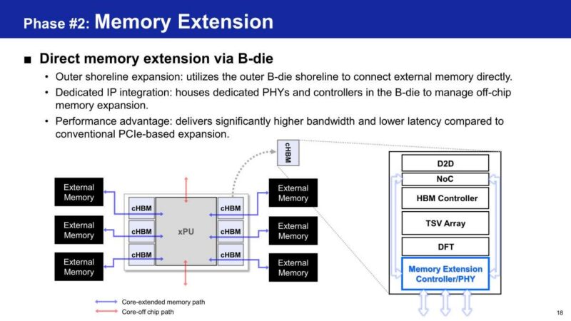
三星还看到把计算卸载到B-die的空间。base die里的处理单元（PE）可承担XPU SoC的部分工作，削减die-to-die带宽需求、降低功耗和热开销。有限硅面积和这些PE带来的更高热密度是关键挑战。
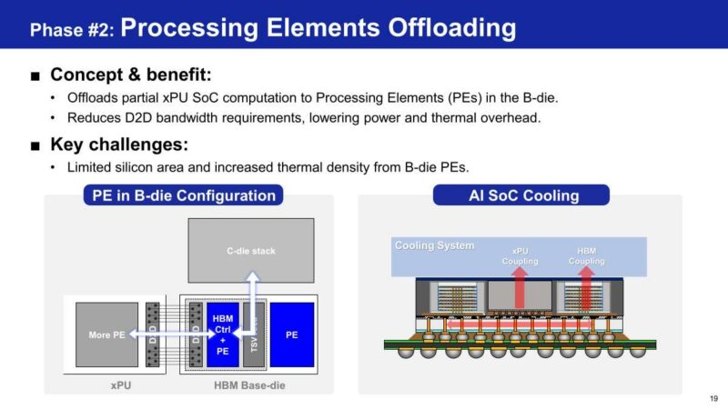
把处理单元集成进base die、三星更进一步走向2.5D系统。先进HBM（aHBM）把XPU计算卸载到那些PE，最小化跨中介层的数据移动。三星称由此实现的能效收益是系统级突破。
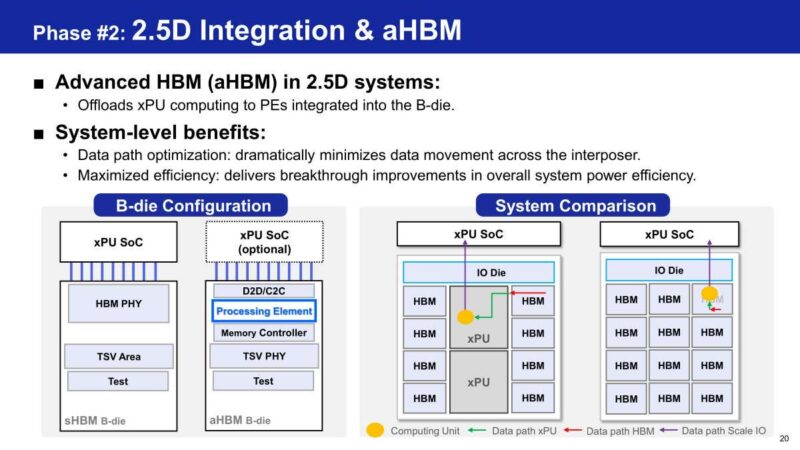
Phase 3完全超出中介层。三星认为行业正转向紧耦合的AI内存，在严格功耗限制内最大化每秒token数是推理的挑战。zHBM是答案：XPU与C-die堆叠的真正3D垂直集成，移除2.5D中介层。
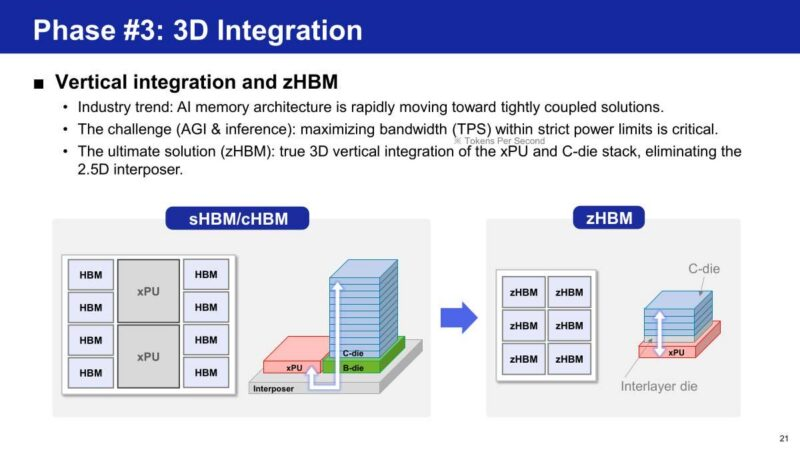
zHBM改变HBM的物理叙事。分布式I/O缩短数据在堆叠内部走的距离，真正3D结构消除传统2D接口（如HBM PHY或D2D）。三星用这种安排瞄准超低功耗。
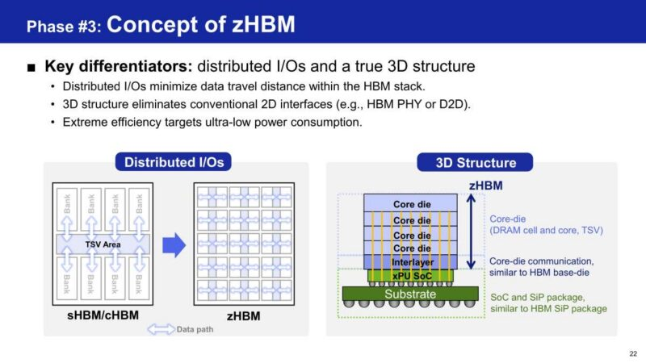
功耗是zHBM的头号优势。移除SERDES和数据对齐开销戏剧性削减I/O功耗，三星的系统级预估显示这转化为算力和热余量。一个例子：SiP里四个zHBM堆叠、配1200W GPU，显著提升带宽同时节省约100W。
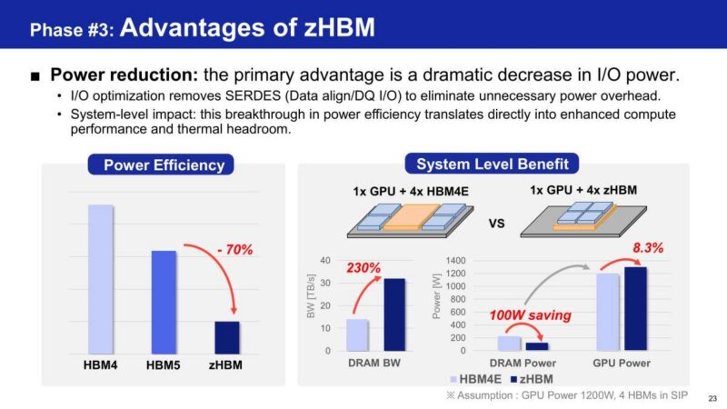
交付zHBM靠两大技术支柱。Wafer-on-wafer键合和混合铜键合实现超高I/O密度，三星强调统一的SoC和DRAM设计验证流对co-architecture至关重要。该图展示WoW键合流程和协同开发DRAM C-die与XPU的一体化设计流程。
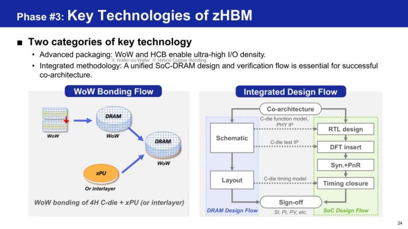
三星以框架收尾：把先进逻辑用到base die解锁架构灵活性：Phase 1卸载并优化、Phase 2扩展功能、Phase 3以zHBM收敛到真正3D集成。这条从回收XPU面积到消除中介层的三阶段路径，就是三星认为推动HBM base-die设计向前的东西。
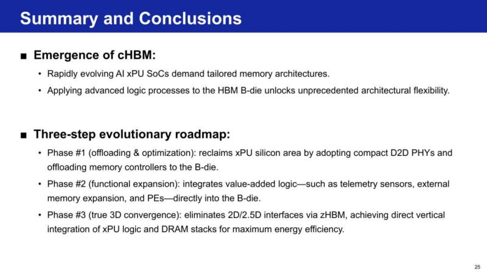
这些图合起来展示三星如何处理演进的HBM base die。
ServeTheHome看法：这个base die正变成协处理器而非被动中介层，改变了AI系统里内存和逻辑设计的位置。把内存控制器、最终还有处理单元搬进HBM，给加速器厂商提供了部分硅的新家。zHBM无论多远，都指引行业走向把计算直接堆在DRAM上、移除中介层。系统架构师应密切关注下一批HBM世代的此转变。一场精彩的Hot Chips 2026演讲。
参考：https://www.servethehome.com/samsung-evolving-hbm-base-die-at-hot-chips-2026/